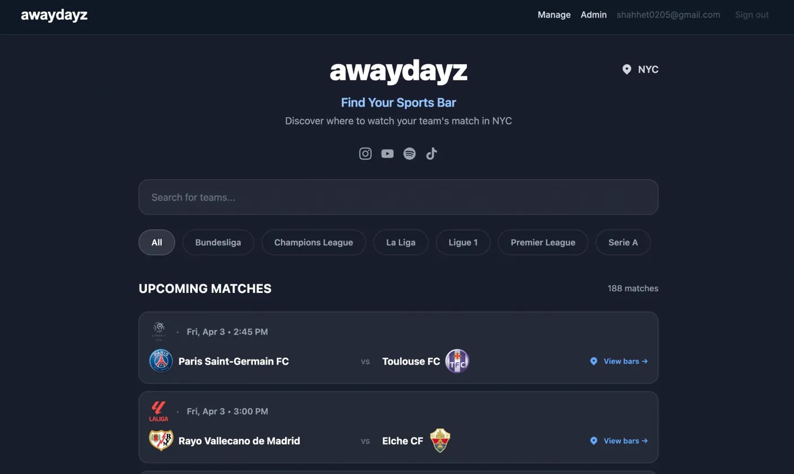
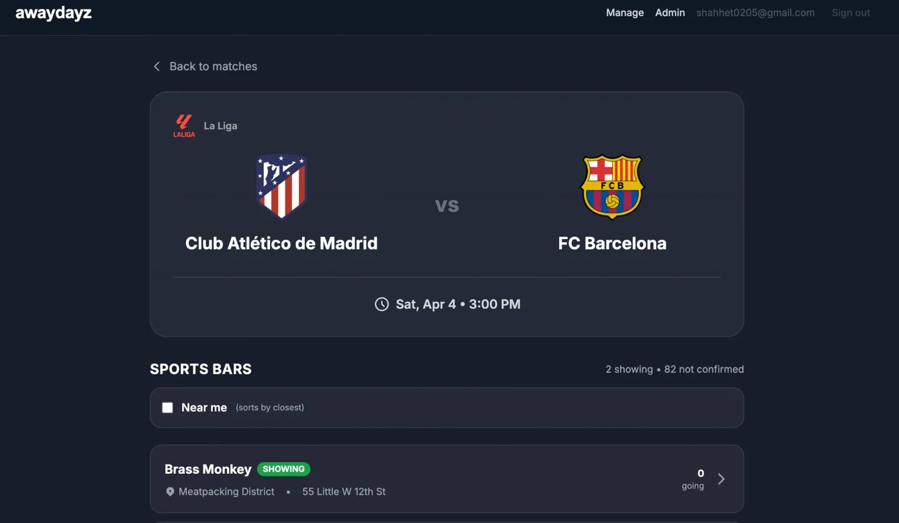
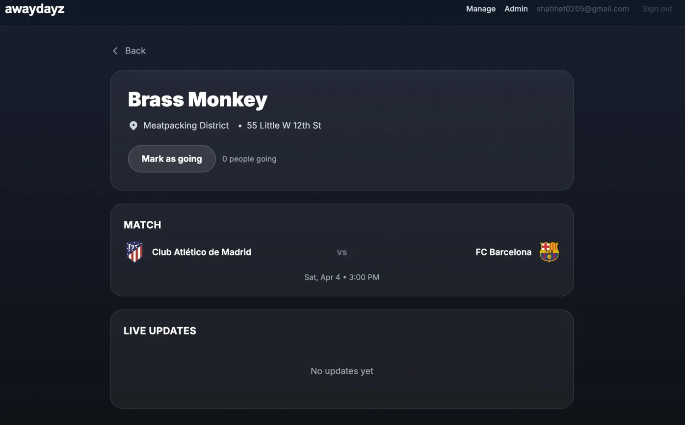
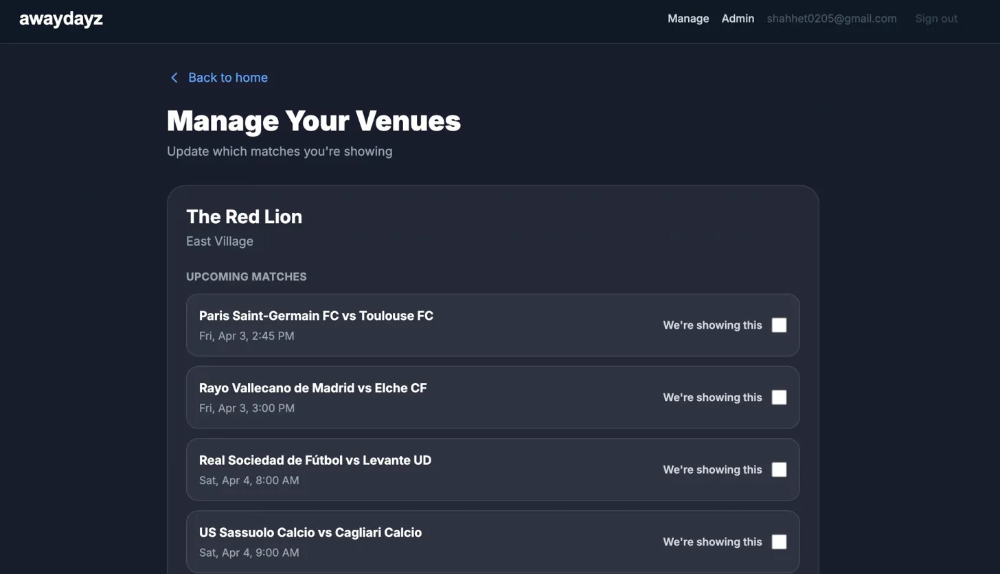

My friend Roberto and I kept asking the same question every weekend: which bar in NYC is showing our team's game? There was no good answer. So we built one.
Visit awaydayz.co ↗Search any team or browse by league. Find which bars in NYC are confirmed showing the game. See how many people are going and mark yourself as attending. Bar owners get a simple admin portal to manage their schedule.

Home screen — 188 upcoming matches across 6 leagues, searchable by team or filtered by league.

Tap a match to see confirmed bars, sorted by distance.

Bar detail — fans can mark themselves as going and see who else is attending.

Bar owner portal — venues check off which upcoming matches they are showing. Takes 2 minutes.
Roberto is Italian and grew up watching Serie A. I grew up watching the Premier League. We met at Stern and quickly bonded over soccer. The problem hit us the same weekend: we both tried to find a bar showing our games, came up empty, and ended up watching on our laptops.
Before writing any code, we talked to people. Fans at supporter club meetups, friends from NYU, and we walked into about 15 bars across the city. What we found confirmed the problem on both sides.
My background as a software engineer at Goldman Sachs meant I could go from idea to live product without a technical co-founder.
I built the full stack: React frontend, Node backend, Supabase for the database and auth, integrated a live football fixtures API for match data, and deployed on Vercel. The bar owner admin portal was designed and shipped in a single weekend after our first bar conversations.
This is the part of my background that makes me a different kind of PM. I can prototype, I can talk to an engineering team as a peer, and I can ship something myself when it matters. AwayDayz is a real example of that.
We are still early. The core product works and bars are actively managing their schedules. The focus right now is growing supply so fans have a reason to come back every weekend.
NYC is just the start. The same problem exists everywhere. A Liverpool fan visiting New York, a Real Madrid fan in Tokyo, an Arsenal fan in Sydney: they all have no idea where to watch their team. We want AwayDayz to be the answer regardless of city or sport.